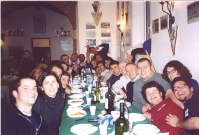
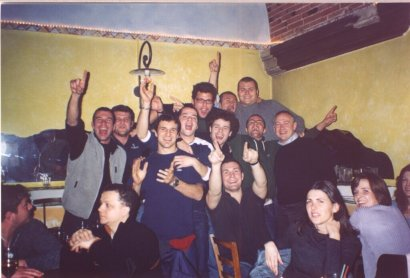

Italian Correspondents - Pete & Gary
There are two of us Sint Ellins lads out here in Livorno. We're both here showing these Italians how to play rugby. They seem to be playing a poof's version of the game. You know how football players throw themselves on the floor after every tackle and roll around and argue with the ref, well
imagine that but with an oval ball.
Gary has been here for two years now and has bagged himself a decent maud. She makes good pasta but a crap split and fish - you can't have it all! He can speak the language, which helps as he's now the coach of the team. But
you'll be pleased to know that his inspirational team talks are just stories of how Roy Haggerty "knocked lads about and that".
I came out here back in November, after Gary called me up because

he needed a back row player. I've got the basics of the language ("Uno d'ogni, per favore cara?" "One of each, please love?" - unfortunately the Pimblett's empire has not stretched this far), but it still needs work.
We spend most of our free time having a look round Tuscany, drinking wine, and eating various cheeses. We also squeeze in the odd skiing session with the occasional BBQ down on the beach here and there. The wine here is absolutely lovely, they're the world champions at making it or something. As a consequence the beer is shite.
The general stereo-type of Italians being soft and vain, in our opinion, is absolutely bang on. They are always swanning about with the perfect hair and clothes which can only be described as "dead good". When they go out they only have one or two glasses of wine and perhaps a coffee. They never get bladdered, like normal people.

We've got a mate out here though, Federico, who came to St.Helens for a visit over Christmas. He's the best Italian we've found. Likes his piss, not that arsed about how he looks, and loves Nexus!
Peter & Gary, Livorno, Tuscany, Italy